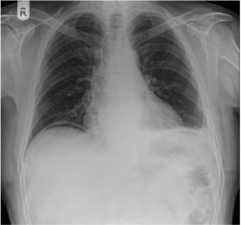
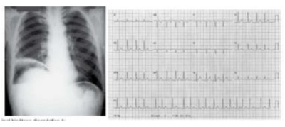
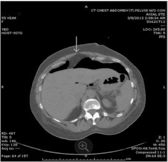
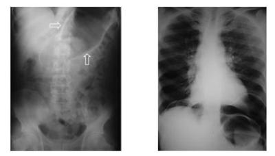
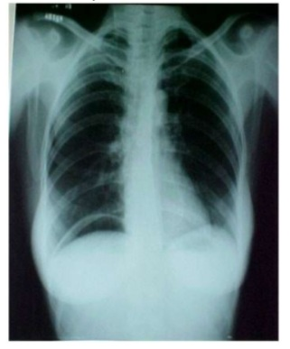
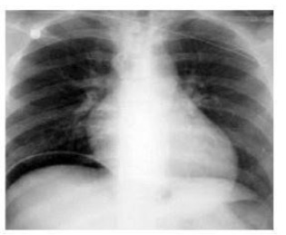

Questão 1 · Manif estações Clínicas · Úlcera péptica Perf urada · Diagnóstico e Classif icação das Úlceras · 4000187344Paciente masculino, 30 anos, encaminhado da unidade de pronto atendimento de nível secundário devido a hipótese de abdome agudo obstrutivo por bridas. Queixa-se de dor abdominal súbita há 8 horas, intensa, em facada, em andar superior do abdome, associada a um episódio de vômito, com piora progressiva durante a observação, sem melhora com analgésicos. Nega trauma recente. Tem histórico de laparotomia prévia por ferimento de arma de fogo. Ao exame físico: regular estado geral, desidratado, taquicárdico, afebril. Semiologia cardiopulmonar normal. Abdome distendido, doloroso difusamente, tenso, com defesa involuntária à palpação. São realizadas as radiogra as de abdome agudo abaixo. A principal hipótese diagnóstica é:

A Úlcera péptica perfurada.
B Pancreatite.
C Apendicite.
D Ureterolitíase.
Questão 2 · Tratamento · 4000186427Um homem de 50 anos está no 5º pós-operatório de ulcerorra a gástrica, com patch de omento. Refere dor abdominal de forte intensidade e mal-estar geral. Pulso: 120 bpm, PA: 90 × 50 mmHg, temperatura: 37,2 °C. Ao exame, o abdome apresenta distensão, doloroso a palpação profunda difusamente. Dreno abdominal com saída de 900 mL de líquido bilioso nas últimas 24 horas. Conduta mais adequada no momento:
A Nutrição parenteral total e observação clínica rigorosa, sonda nasogástrica e antibioticoterapia.
B Jejum, sonda nasogástrica aberta e antibioticoterapia. Realizar tomografia para diagnóstico e drenagem de eventuais coleções não contempladas pelo dreno.
C Endoscopia para confirmação da provável deiscência da sutura e planejamento cirúrgico.
D Exames laboratoriais e tomografia de abdome com contraste oral, para confirmar a suspeita diagnóstica.
E Nova abordagem cirúrgica.
Questão 3 · Abdome Agudo Perf urativo · 4000186064Você atende um paciente com queixa de dor abdominal. A dor teve início súbito há 3 horas. Você examina o paciente e percebe sinais de irritação peritoneal. Nos exames de imagem, você observa a alteração abaixo: Qual a etiologia do quadro do paciente?

A Abdome Agudo Inflamatório.
B Abdome Agudo Perfurativo.
C Abdome Agudo Vascular.
D Abdome Agudo Obstrutivo.
E Abdome Agudo Hemorrágico.
Questão 4 · Diagnóstico · Úlcera péptica Perf urada · Manif estações Clínicas e Exame Físico · 4000185919Homem, 50 anos, com diagnóstico prévio de celulite em membro inferior direito há 1 semana, em tratamento com cefalexina e AINEs para analgesia. Procura Pronto-Socorro com dor abdominal intensa em região superior do abdome de forte intensidade de início há 48 horas associado a distensão abdominal, anorexia e náuseas. Nega febre, nega vômitos, nega alterações em evacuação, nega alterações urinárias. Exame Físico: REG, Descorado 1/4, anictérico, acianótico, MV+, s/RA; Abdome globoso; timpânico; RHA+; distendido, tenso, dor difusa à palpação super cial e profunda, descompressão brusca positiva na região supraumbilical. Sinal de Jobert positivo. Qual o diagnóstico mais provável?
A Colecistite aguda litiásica.
B Isquemia mesentérica aguda.
C Úlcera péptica perfurada.
D Doença inflamatória intestinal.
E Pileflebite esplênica.
Questão 6 · Diagnóstico · Tratamento · 4000182530Homem, 62 anos, chegou ao pronto atendimento com queixa de dor epigástrica intensa há 24 horas, evoluindo para dor abdominal difusa, de forte intensidade (9/10) há 5 horas. Refere ter tido muita dor no joelho na última semana, tendo feito uso de anti-inflamatórios não esteroidais nos últimos 6 dias por conta própria. Antecedentes pessoais de hipertensão arterial sistêmica e acidente vascular encefálico (sem sequelas), em uso de Losartana e Varfarina. Ao exame clínico, encontra-se pálido, sudoreico, descorado +/4+, anictérico e consciente. Sinais vitais: FC 108 bpm, FR 20 irpm, PA 80 x 50 mmHg, Tax 37,9 ºC. Exame do abdome revelou ruídos hidroaéreos ausentes, bastante doloroso à palpação, com descompressão brusca presente. Aparelho cardiovascular sem alterações, aparelho respiratório com murmúrio diminuído nas bases, sem ruídos adventícios. A abordagem mais indicada para esse paciente, nesse momento, deverá ser a solicitação de
A radiografia de abdome e tórax; endoscopia digestiva para tratamento de úlcera péptica hemorrágica.
B radiografia de abdome e tórax; tomografia computadorizada de abdome total com triplo contraste.
C tomografia computadorizada de abdome total com duplo contraste; encaminhamento para a UTI.
D radiografia de abdome e tórax; encaminhamento para laparotomia exploradora no caso de pneumoperitôneo.
E ultrassonografia de abdome superior; realização de colecistectomia por videolaparoscopia sob anestesia geral.
Questão 7 · Diagnóstico · Manif estações Clínicas e Exame Físico · 4000175916Homem de 40 anos com quadro agudo de dor súbita no epigástrio e irradiação para todo o abdome há seis horas, vômitos claros no início e parada da eliminação de gases. No exame físico, com contratura abdominal e com sinais de irritação peritoneal em todo o abdome. O exame complementar inicial a ser realizado será:
A RNM do Abdome
B Tomografia do Abdome
C Ultrassom do abdome
D Raio-x de Abdome
Questão 8 · Diagnóstico · Manif estações Clínicas e Exame Físico · 4000175630Homem de 56 anos portador de neoplasia de próstata com metástase óssea, em tratamento com terapia de privação androgênica e, para dores lombares, vem em uso de meloxicam 15 mg diariamente e dipirona 1 g de 6/6 horas, sem outras comorbidades. Vinha em uso controlado da doença de base e do quadro álgico quando deu entrada no pronto-socorro com forte dor abdominal em queimação, sudorese fria, taquis gmia, pressão arterial na admissão de 104/60 mmHg, consciente e agitado. No exame físico do abdome nota-se defesa difusa a palpação super cial, ruídos hidroaéreos ausentes e hipertimpanismo no espaço de Traube e na loja hepática. Demais sistemas sem alterações no exame físico e eletrocardiograma normal. Diante das alternativas, qual seria sua próxima conduta?
A Solicitar um ultrassom de abdome total.
B Medicar com pantoprazol, ranitidina, dipirona intravenosa e reavaliar sintomas após.
C Solicitar radiografia do abdome total e do tórax em ortostase e em decúbito lateral direito.
D Solicitar de forma seriada troponina e CK-MB.
E Solicitar endoscopia digestiva alta de urgência.
Questão 9 · Diagnóstico · Manif estações Clínicas e Exame Físico · 4000175626Qual o diagnóstico e melhor conduta para o caso abaixo: Paciente de 80 anos com histórico de dor súbita epigástrica, vômitos e distensão abdominal.Uso crônico de ibuprofeno para dor lombar. Leucograma 13.000 leucócitos , 2% bastões.Tomogra a de abdome: pequena quantidade de líquido livre retrogástrico com focos gasosos em seu interior.
A Internamento, início de antibioticoterapia venosa, laparoscopia de urgência.
B Internamento, início de antibioticoterapia venosa, sondagem nasogástrica, observação clínica.
C Antibiótico oral, alta hospitalar e reavaliação em 48 horas.
D Analgesia oral, alta hospitalar e reavaliação em 48 horas.
E Sondagem nasogástrica, analgesia e observação na urgência com reavaliação em 24 horas.
Questão 10 · Diagnóstico · Manif estações Clínicas e Exame Físico · 4000175552Leia o caso clínico a seguir. Paciente de 45 anos, do sexo masculino, tabagista e etilista, apresentou dor abdominal súbita em epigástrio há cerca de 12 horas, associada a abdômen em tábua e desaparecimento da macicez à percussão em topografia hepática. Nesse caso, qual deve ser a conduta?
A A endoscopia digestiva alta está indicada de imediato, pela alta sensibilidade e especificidade em caso de úlceras gástricas.
B A tomografia de abdome é fundamental para diferenciar a origem do pneumoperitôneo e planejar a topografia da incisão.
C Observar o desaparecimento da macicez à percussão em topografia hepática, que é o sinal de Gersuny.
D A radiografia de tórax pode ser o único exame necessário para confirmação da suspeita clínica e indicação cirúrgica.
Questão 11 · Fisiopatologia · Fisiopatologia · Trombose Venosa · 4000173545Homem, 41 anos encontra-se em avaliação clínica para um quadro de hipercalcemia secundária a hiperparatiroidismo. Quais dos quadros de abdome agudo abaixo estão relacionados a essa condição?
A Diverticulite e colecistite
B Apendicite e úlcera péptica perfurada
C Diverticulite e pancreatite
D Úlcera péptica perfurada e pancreatite
E Trombose mesentérica e pancreatite
Questão 12 · Diagnóstico · 4000171050Um paciente de 76 anos de idade, com história obtida por meio de familiar de dor abdominal nas últimas 48 horas, história de doença péptica crônica, apresenta-se ao exame físico em posição antálgica, com os membros inferiores etidos, defesa abdominal involuntária à palpação abdominal nos quatro quadrantes. Entre outros elementos de quadro clínico e de propedêutica de imagem associáveis ao quadro clínico descrito, aqueles que seriam mais relevantes para o diagnóstico de úlcera perfurada são
A hipotensão arterial e ultrassonografia abdominal.
B sudorese e esofagografia com contraste iodado diluído.
C macicez móvel de decúbito e rotina de abdome agudo.
D taquicardia e tomografia computadorizada.
E taquipneia e radiografia de abdome simples.
Questão 13 · Abdome Agudo Perf urativo · Cirurgia · 4000170572Um homem de cinquenta anos de idade, etilista e tabagista, chega ao pronto-socorro por dor abdominal difusa iniciada há cerca de 30 minutos. Ele foi levado pelo médico da unidade básica de saúde, que fez o primeiro atendimento. Esse médico, além das informações clínicas sobre o caso, levou consigo uma radiogra a de abdome, que mostrava uma lâmina aérea entre o fígado e o diafragma. Com base nesse caso hipotético, assinale a alternativa que apresenta a melhor conduta para o paciente.
A endoscopia digestiva alta
B tomografia computadorizada de abdome
C dosagem de amilase e lipase
D laparotomia exploradora
E passagem de sonda nasogástrica e reavaliação
Questão 14 · Abdome Agudo Perf urativo · Cirurgia · 4000169935Paciente de 38 anos é atendido na urgência com quadro de dor abdominal súbita, de forte intensidade, mais pronunciada em epigástrio, porém com irradiação para todo o abdome, contínua, sem fatores de melhora. Apresenta-se hipotenso, taquicádico, com sinais de peritonite difusa à palpação. Radiogra a de tórax revela pneumoperitônio. Qual a principal hipótese diagnóstica e conduta adequada ao caso?
A Abdome agudo hemorrágico; solicitar ultrassonografia de abdome total + exames laboratoriais.
B Abdome agudo perfurativo; iniciar estabilização clínica e laparotomia exploradora.
C Abdome agudo vascular; iniciar anticoagulação.
D Abdome agudo perfurativo; estabilização clínica e endoscopia digestiva alta.
E Abdome agudo hemorrágico; solicitar tomografia de abdome.
Questão 15 · Diagnóstico · Abdome Agudo Perf urativo · Úlcera péptica Perf urada · 4000168434Uma paciente de 60 anos de idade compareceu à emergência com queixa de dor abdominal de forte intensidade, com início há cerca de 3 horas. Apresenta histórico de tabagismo crônico desde os 18 anos de idade e faz uso regular anti- hipertensivos e AAS. Ao exame físico, apresenta abdome globoso, doloroso à palpação e hipertimpanismo em região hepática. De acordo com caso, o sinal semiológico de hipertimpanismo em região hepática, o tipo de abdome agudo e a provável causa são, 'respectivamente:
A Cullen / Perfurativo / Divertículo perfurado.
B Murphy / Inflamatório / Colecistite.
C Aaron / Obstrutivo / Apendicite.
D Jobert / Perfurativo / Úlcera Péptica.
E Kehr / Perfurativo / Câncer Gástrico.
Questão 16 · Abdome Agudo Perf urativo · Cirurgia · 4000168345Paciente masculino, de 75 anos, com diabetes melito, hipertensão arterial sistêmica e histórico de uso crônico e por conta própria de anti-inflamatório não esteroidal para dores articulares, procurou a Emergência por quadro de hematêmese e dor abdominal, com evolução de 12 horas. À chegada, apresentava mucosas úmidas e descoradas, fáceis de dor, temperatura axilar de 36,8°C e pressão arterial de 90/60 mmHg. Que achado do exame físico, dentre os abaixo, se relaciona com a presença de úlcera gástrica ou duodenal perfurada?
A Dor no quadrante inferior direito à palpação do quadrante inferior esquerdo.
B Dor à palpação do hipocôndrio direito durante a inspiração profunda.
C Desaparecimento da macicez e aparecimento de hipertimpanismo na região hepática à percussão.
D Equimose periumbilical.
Questão 17 · Abdome Agudo Perf urativo · Cirurgia · 4000166814Paciente tabagista, de 51 anos, deu entrada na emergência com quadro de dor abdominal súbita há duas horas. Após avaliação pela equipe da cirurgia e radiogra a simples de tórax, foi indicada laparotomia exploradora por suspeita de úlcera perfurada. Achado intraoperatório: úlcera gástrica perfurada justa pilórica com orifício de 2,2 cm e calo broso importante, com peritonite generalizada. Nesse caso, qual é a melhor conduta operatória?
A Exteriorização de sonda de gastrostomia por orifício de perfuração e fixação da mesma.
B Rafia de perfuração gástrica com “pach” de omento.
C Vagotomia troncular, piloroplastia e rafia de perfuração.
D Antrectomia com reconstrução em Y de Roux.
Questão 18 · Tratamento Cirúrgico da Úlcera Péptica · Tratamento · 4000173402A figura abaixo ilustra uma alternativa para o tratamento das úlceras gastroduodenais complicadas por perfuração > 3cm. Trata-se de:

A Antrectomia com reconstrução em Y de Roux.
B Antrectomia com reconstrução a Bilroth II.
C Antrectomia com reconstrução a Bilroth I.
D Antrectomia com reconstrução a Siwert I.
Questão 19 · Manif estações Clínicas e Exame Físico · Urgências Abdominais Abdome Agudo · 4000173078Avaliação da Dor Abdominal Paciente sexo masculino de 45 anos é submetido a uma colonoscopia na qual é encontrado e removido com alça diatérmica um pólipo semipediculado de cerca de 0,6 cm de diâmetro no colo ascendente. Terminado o exame o paciente se queixa de dor abdominal crescente que não melhora após a segunda hora de observação. A conduta neste caso deve ser:
A Realizar enema baritado.
B Repetir a colonoscopia.
C Laparotomia Imediata
D Antibioticoterapia e observação.
E Avaliar o paciente com rotina radiológica para abdome agudo.
Questão 20 · Diagnóstico · Manif estações Clínicas e Exame Físico · 4000171959Paciente de 72 anos, masculino, dá entrada em pronto-socorro com queixa de dor epigástrica súbita há 2 horas, de forte intensidade, com irradiação para o dorso e tórax, associada a vômitos e sudorese fria. Nega febre. Relata piora progressiva neste intervalo de tempo e nega melhora com analgesia simples. É portador de hipertensão arterial, sistêmica, fibrilação atrial crônica, diabetes melitus tipo II, artrite reumatoide e é tabagista. Em uso contínuo de losartana (100mg/dia), hidroclorotiazida (25mg/dia), varfarina (5mg/dia), metoprolol (50mg/dia), metformina (1000mg/dia), e diclofenaco (75mg/dia). Ao exame físico encontra-se em regular estado geral, sudoreico, taquicárdico, descorado, desidratado, anictérico, acianótico, afebril. Bulhas cardíacas arrítmicas, sem sopros audíveis, pulsos periféricos cheios e amplos. Murmúrio vesicular reduzido bilateralmente, sem ruídos adventícios. Abdome com ruídos, ácido, doloroso difusamente, sem sinais de irritação peritoneal. Sinal de Murphy negativo. Sinal de Jobert negativo. Sinais vitais da admissão: pressão arterial: 170/110 mmHg (membro superior direito) e 180/110 mmHg (membro superior esquerdo), frequência respiratória: 22 irpm, frequência cardíaca: oscilando entre 100 e 120 bpm, saturação periférica de oxigênio: 93%, temperatura axilar: 37.3ºC. Foi submetido à radiografia de tórax e eletrocardiograma abaixo. A principal hipótese diagnóstica é:

A Síndrome coronariana aguda.
B Dissecção aguda de aorta.
C Abdome agudo perfurativo.
D Tromboembolismo venoso
Questão 21 · Cirurgia · Tratamento · 4000147405Paciente masculino de 40 anos, sem comorbidades, com relato de ter feito uso de anti-inflamatórios por 10 dias devido a “dor nas costas”. Admitido no pronto-socorro com queixa de dor abdominal em região epigástrica de forte intensidade, há 6 horas, associada a náuseas e um episódio de vômito. Ao exame físico, apresentava-se em REG, desidratado, descorado e afebril. PA: 110 x 70 mmHg, FC: 98 bpm; FR: 20 ipm. O abdome apresentavase tenso, “em tábua”, com ruídos hidroaéreos diminuídos e descompressão brusca dolorosa no abdome inferior. Toque retal com fezes na ampola. Realizada rotina radiológica de abdome agudo, que mostrou pneumoperitônio. Foi indicada laparotomia exploradora, e, no intraoperatório, foi verificada a presença de pequena quantidade de líquido livre na cavidade (secreção gástrica) e úlcera perfurada em antro gástrico de 2,5 cm, sem calo ulceroso palpável. Diante da provável hipótese diagnóstica, qual é a melhor conduta para o caso apresentado?
A Antrectomia com reconstrução a BI.
B Antrectomia com vagotomia troncular e reconstrução a BII.
C Gastrectomia distal com vagotomia superseletiva e reconstrução a BII.
D Gastrectomia distal com vagotomia troncular e reconstrução com Y de Roux.
E Rafia da úlcera gástrica com patch de Graham.
Questão 22 · Cirurgia · Tratamento · 4000146805Homem, 37 anos, fumante. Encaminhado da UPA, com diagnóstico provável de úlcera péptica perfurada. Durante a laparotomia, identifica-se uma perfuração (2cm) na parede anterior da 1ª. porção duodenal. A conduta cirúrgica adequada inclui
A biópsia das bordas da úlcera.
B vagotomia troncular.
C piloroplastia.
D antrectomia.
E síntese e retalho omental.
Questão 23 · Abdome Agudo Perf urativo · Cirurgia · 4000146677O tratamento do abdome agudo perfurativo é eminentemente cirúrgico, sendo que a conduta intraoperatória dependerá da etiologia do quadro. Considerando o contexto, é INCORRETO afirmar:
A Úlceras perfuradas, na maioria das vezes, podem ser suturadas, com associação ou não à proteção com retalho do omento maior.
B A gastrectomia é rara e fica reservada a úlceras de grande diâmetro, terebrantes para o pâncreas ou para suspeita de neoplasia.
C Perfurações de delgado também podem ser suturadas ou exigir enterectomias segmentares.
D Suturas no cólon, com ou sem ostomias de proteção, devem ser determinadas baseadas exclusivamente no estado hemodinâmico do paciente durante a cirurgia.
Questão 24 · Diagnóstico · Manif estações Clínicas e Exame Físico · Tratamento · 4000145335Um homem de 54 anos deu entrada na emergência do UDI Hospital com história de vômitos recorrentes e distensão abdominal acompanhada de dor difusa há 3 dias. Nega comorbidades e tem antecedente cirúrgico de apendicectomia há 5 anos. Ao exame físico, pulso 120bpm, pressão arterial 11 0x70 mmHg, abdome distendido, hipertimpânico, descompressão brusca positiva. Realizou raio-X de abdome agudo que mostrou empilhamento de moedas e níveis hidroaereos. Analise as a rmativas abaixo e dê valores Verdadeiro (V) ou Falso (F): () A primeira hipótese diagnóstica é abdome agudo obstrutivo por brida. () A primeira hipótese diagnóstica é tumor obstrutivo de cólon. () O próximo exame imaginológico que pode ser realizado para elucidação do caso é tomogra a computadorizada de abdome total, com contraste venoso e oral. () Não se deve realizar nenhum outro exame de imagem e sim indicar laparotomia exploradora. () Deve-ser tentar tratamento clínico nesse paciente a princípio. Assinale a alternativa que apresenta a sequência correta de cima para baixo:
A F, V, V, F, F
B V, F, F, V, V
C F, V, V, F, V
D V, F, V, F, V
E F, V, F, F, F
Questão 25 · Abdome Agudo Perf urativo · 4000144594No abdome agudo perfurativo, ar fora da alça, delimitando seus limites, caracteriza o sinal semiológico de:
A Rovsing.
B Murphy.
C Ridler.
D Joubert.
Questão 26 · Úlcera péptica Perf urada · Cirurgia · 4000142163Uma paciente de 76 anos de idade compareceu ao atendimento médico queixando-se de dor de forte intensidade no abdome, com início há cerca de duas horas. Relata ser tabagista, hipertensa e utilizar remédios para dores nas costas de forma contínua. Ao exame físico, apresentou abdome em tábua à palpação. Quanto aos sinais vitais, observam-se PA = 90 mmHg x 40 mmHg, FC = 120 bpm, FR = 20 irpm e SatO2 = 96%. A respeito desse caso clínico, assinale a alternativa correta.
A É imprescindível a realização de uma tomografia com contraste para definição de conduta e diagnóstico.
B O tratamento é com antibioticoterapia e monitorização da paciente.
C Deve-se orientá-la quanto à necessidade de interromper o tabagismo, manter a doença hipertensiva controlada e investigar o motivo da dor nas costas, sem nenhum tratamento adicional.
D A dor relatada pela paciente é compatível com o exame físico, tratando-se de um abdome agudo vascular.
E O provável diagnóstico é de úlcera péptica perfurada, e o tratamento é cirúrgico.
Questão 27 · Diagnóstico · Tratamento · 4000141256Um paciente tabagista e etilista procura atendimento em pronto-socorro em razão de dor abdominal súbita e com piora nas últimas 24 horas. Apresenta abdome em tábua, desaparecimento da macicez hepática e os seguintes sinais vitais: PA = 100 mmHg x 60 mHg, FC = 120 bpm, FR = 19 irpm e SatO2 = 99%. Considerando esse caso clínico, a respeito de abdome agudo, assinale a alternativa correta.
A O exame de escolha, indicado nesse momento, é a tomografia computadorizada com contraste.
B Devem ser receitados inibidores da bomba de prótons e deve-se observar a evolução do tratamento.
C O tratamento de
D As úlceras gástricas do tipo I e IV não estão associadas a níveis elevados de ácidos e não necessitam de vagotomia.
E Os raios X de abdome agudo não ajudariam no diagnóstico de pneumoperitônio.
Questão 28 · Úlcera péptica Perf urada · 4000140650Paciente de 44 anos, sexo feminino, com diagnóstico de artrite reumatoide, em uso de hidroxicloriquina e etoricoxibe, há duas semanas, devido à exarcebação do quadro de artralgia, procura o pronto-socorro com quadro de dor de forte intensidade no andar superior do abdome. Ao exame físico, apresenta dor e defesa em epigástrio. Exames laboratoriais demonstram 18.000 leucócitos/mm3 e Proteína C reativa = 230 mg/dl. Realiza tomogra a de abdome cuja imagem está reproduzida abaixo. A conduta mais adequada para esse quadro é

A jejum oral, hidratação venosa e analgésicos.
B laparoscopia diagnóstica e terapêutica.
C ressonância magnética do abdome para estadiamento.
D sedação anestésica para redução da hérnia.
Questão 29 · Úlcera péptica Perf urada · 4000140648Paciente de 44 anos, sexo feminino, com diagnóstico de artrite reumatoide, em uso de hidroxicloriquina e etoricoxibe, há duas semanas, devido à exarcebação do quadro de artralgia, procura o pronto-socorro com quadro de dor de forte intensidade no andar superior do abdome. Ao exame físico, apresenta dor e defesa em epigástrio. Exames laboratoriais demonstram 18.000 leucócitos/mm3 e Proteína C reativa = 230 mg/dl. Realiza tomogra a de abdome cuja imagem está reproduzida abaixo. O diagnóstico mais provável para esse quadro é

A hérnia epigástrica estrangulada.
B úlcera péptica perfurada.
C pancreatite aguda necrotizante.
D tumor desmoide da parede abdominal.
Questão 30 · Úlcera péptica Perf urada · 4000133646Homem de 28 anos dá entrada no pronto-socorro com queixa de forte dor na fossa ilíaca direita (FID). Ele relata que iniciou episódio de dor epigástrica nas últimas 48 horas e que nas últimas duas horas a dor localizou-se no quadrante inferior direito, onde há defesa e dor à descompressão. Há febre de 37,8ºC e o hemograma mostra leucocitose de 15.500 leucócitos com 6% de bastões e 0% de eosinó los. O raio X simples de abdômen mostra apenas discreta distensão de alças na FID. Levado à cirurgia, os achados operatórios iniciais são de um apêndice normal e secreção biliosa na fossa ilíaca direita. Nesse caso, a perfuração deve ter sido causada por:
A ileíte terminal
B úlcera duodenal
C colecistite aguda
D divertículo de Meckel
Questão 31 · Úlcera péptica Perf urada · Cirurgia · 4000128418Paciente, 52 anos. do sexo masculino, tabagista e etilista, apresenta dor abdominal súbita em epigástrio. há aproximadamente 24h, associada a abdômen em tábua e desaparecimento da macicez à percussão om topogra a hepática
A Endoscopia digestiva alta está indicada de imediato para esse paciente.
B O desaparecimento da macicez à percussão em topografia hepática é sugestiva de gás livre na cavidade addominal.
C A US é o exame de escolha para esse paciente, uma vez que, em caso de estar presente, o gás livre favorece o estudo da cavidade abdominal.
D O tratamento com bloqueadores da bomba de prótons em altas doses é a conduta de escolha para esse paciente.
E A parede posterior do duodeno é a topografia mais frequente para perfuração das úlceras pépticas.
Questão 32 · Úlcera péptica Perf urada · Cirurgia · 4000120253Um paciente de 34 anos de idade foi ao pronto-socorro por dor abdominal de forte intensidade há duas horas. No exame físico de entrada, apresentava abdome em tábua. Realizou radiogra a de tórax, que mostrou cúpulas com presença de pneumoperitônio. Com base nesse caso hipotético, assinale a alternativa correta em relação ao abdome agudo perfurativo.
A Nunca é possível tratar abdome agudo perfurativo por videolaparoscopia.
B Nas úlceras gástricas perfuradas maiores e muito infiltrativas, a conduta mandatória é realizar epiloplastia a Graham.
C Nas úlceras duodenais perfuradas extensas, o tratamento de escolha é a duodenopancreatectomia parcial.
D Nunca se pode fazer gastrectomia no abdome agudo perfurativo, devido ao alto risco de fístula duodenal.
E Sempre se deve fazer gastrectomia nas úlceras gástricas perfuradas maiores de 2 cm com suspeita tumoral.
Questão 33 · Abdome Agudo Obstrutivo · Abdome Agudo Perf urativo · Urgências Abdominais Abdome Agudo · 4000111828O raio X simples de abdômen para avaliação de abdômen agudo tem maior importância nos tipos:
A vascular e hemorrágico.
B obstrutivo e vascular.
C inflamatório e perfurativo.
D perfurativo e obstrutivo.
E perfurativo e vascular.
Questão 34 · Abdome Agudo Perf urativo · Cirurgia · 4000106366Um paciente de 45 anos procurou o pronto-socorro de hospital terciário, que tem todos os recursos diagnósticos e terapêuticos disponíveis, com dor abdominal há aproximadamente 24 horas, tipo pontada. A dor inicialmente era em região infraumbilical e de pequena intensidade. Tornou-se progressivamente mais intensa, passando a irradiarse para o tórax e para o ombro direito. Negava outros fatores concomitantes. Estava em bom estado geral, mas tinha alteração do pulso, que tinha frequência de 120 bpm. O abdome era doloroso difusamente à palpação profunda, com sinal de Jobert presente, mas sem sinais de irritação peritoneal. Negava antecedentes médicos relevantes. Negava laparotomia, tabagismo, uso de medicações ou drogas ilícitas. Referia apenas ingesta alcoólica habitual (cerca de 20 g de álcool etílico/dia). Dos exames de laboratório solicitados, apenas o leucograma estava alterado: 17.580 leucócitos/mm³, sem desvio à esquerda. As radiogra as, ilustradas a seguir, mostraram pneumoperitônio de grandes proporções. Foi indicada laparotomia exploradora. Na abertura da cavidade abdominal (incisão mediana), identi cou-se saída de grande quantidade de gás, logo após a incisão do peritônio. Não se achou contaminação, nem líquido entérico. No inventário da cavidade, procedeu-se à inspeção e palpação de todos os órgãos, incluindo diafragma, estômago (foi explorada a retrocavidade dos epíplons), duodeno (após manobra de Kocher), intestino delgado e grosso (após descolamento de ambas as goteiras parietocólicas). Nenhuma alteração foi encontrada. Por m, através da sonda nasogástrica, foi insu ado ar no estômago e não ocorreu escape aéreo. Foi ainda injetado azul de metileno, que também não extravasou para a cavidade peritoneal. Com relação à conduta adotada, é correto afirmar:

A A conduta foi correta, uma vez que os riscos inerentes ao procedimento não suplantam os riscos de se deixar possível causa de pneumoperitônio sem tratamento.
B Deveria ter sido submetido antes a colonoscopia, para afastar a presença de cistos no cólon.
C O paciente não deveria ter sido operado, pois seu pneumoperitônio é claramente idiopático.
D Deveria ter sido submetido antes a endoscopia digestiva alta, pois a principal hipótese diagnóstica era úlcera perfurada.
E A tomografia de abdome com contraste poderia dispensar a intervenção cirúrgica.
Questão 35 · Outras Causas de Abdome Agudo Perf urativo · 4000099168Mulher, 36a, procura o Pronto Socorro com queixa de dor abdominal, náusea e inapetência há 2 dias, após realização de endoscopia digestiva alta. Realizada polipectomia, na segunda porção do duodeno face posterior. Exame físico: PA= 89x68 mmHg, FC= 126bpm, FR= 20irpm, T= 37,8°C, anictérica; Abdome: plano, ácido, dor a palpação profunda em epigástrio, sem descompressão brusca dolorosa, Sinais de Murphy e Blumberg ausentes. O EXAME COMPLEMENTAR DO ABDOME E O RESULTADO ESPERADO SÃO:
A Colangiopancreatografia; edema de pâncreas.
B Exame radiográfico simples; pneumoretroperitôneo.
C Tomografia computadorizada; pneumoperitôneo.
D Esôfago-estômago-duodeno contrastado; área cicatricial com estenose.
Questão 36 · Úlcera péptica Perf urada · Cirurgia · 4000083972Um homem de 60 anos de idade, com história de etilismo e tabagismo, em tratamento regular para DPOC com corticosteroide oral, apresentou quadro súbito de forte dor no andar superior do abdome. Ao exame físico, apresentava-se hidratado, corado, acianótico, taquicárdico e normotenso. Exame cardiopulmonar sem alterações. Abdome tenso, com peristalse débil, doloroso difusamente à palpação profunda, com sinais de defesa e hipertimpanismo à percussão de hipocôndrio direito. Tomografia apresentando liquido livre perihepático e peripancreatico. Qual o diagnóstico mais provável:
A Pancreatite aguda
B Ulcera gástrica perfurada
C Colecistite aguda
D Angina abdominal
Questão 37 · Manif estações Clínicas e Exame Físico · Cirurgia · Pancreatite Aguda · 4000032053Paciente 60 anos, feminino, com bromialgia em uso de anti-inflamatórios não esteroidais de forma recorrente, procura pronto atendimento devido a dor abdominal súbita iniciada há 3 horas com piora progressiva associado a distensão abdominal, inapetência e náuseas. Ao exame físico apresenta fáscies de dor, pele pegajosa, hipocorada, com abdome apresentando rigidez muscular involuntária e posição antálgica. A respeito do caso, julgue a alternativa incorreta:
A Seja a indicação de exames de “rotina de abdome agudo” ou exames sofisticados para elucidação, a formulação de hipóteses diagnósticas somente pode ser feita após adequada avaliação do quadro clínico do paciente. No caso em questão a dosagem de amilase e o exame de tomografia podem sugerir duas causas comuns de abdome agudo. Um inflamatório e outro perfurativo.
B A abordagem minimamente invasiva em quadros de abdome agudo perfurativo é factível, embora o atraso no diagnóstico acabe levando à instabilidade hemodinamicamente, uma contraindicação formal ao pneumoperitônio.
C Processos inflamatórios do pâncreas induzido por medicamentos devem ser considerado em qualquer quadro de abdome agudo, embora as principais etiologias sejam litiase biliar e autoimune.
D Achados radiológicos de pneumoperitonio, alça sentinela, escoliose antálgica, apagamento do psoas, níveis hidroaéreos sempre devem ser buscados em radiografia simples, embora nem sempre presentes.
Questão 38 · Abdome Agudo Perf urativo · Cirurgia · 4000031581Observe a imagem e marque a opção correta:

A A representação clínica da imagem é o sinal de Joubert.
B Há sempre indicação de laparotomia ou laparoscopia diagnóstica.
C No caso de indicação de laparotomia, deve-se prescrever carbapenemicos.
D Está indicado o uso de antifúngico: anfotericina.
Questão 39 · Diagnóstico · Perf uração · Manif estações Clínicas e Exame Físico · 4000013980Paciente do sexo masculino, 43 anos, com quadro de dor em região epigástrica há 24 horas, é admitido no pronto-socorro. Na história tem antecedente de hipertensão arterial sistêmica e Diabetes Mellitus. Ao exame clínico, apresenta palpação dolorosa em região epigástrica e ancos. Raio X abdominal em posição ortostática revela presença de sinal de Rigler. Hemograma com leucocitose e dosagem de amilase com valor de 363mgr/dl. Considerando o caso descrito, assinale o diagnóstico MAIS PROVÁVEL para esse paciente.
A Pancreatite aguda.
B Úlcera duodenal perfurada.
C Colecistite aguda.
D Colangite aguda.
Questão 40 · Abdome Agudo Perf urativo · Cirurgia · 4000121588Um paciente de 45 anos de idade apresenta dor epigástrica súbita e vômitos há doze horas, com piora progressiva. Ao exame físico, estava em regular estado geral, pálido e taquicárdico, com dor à palpação em todo o abdome e defesa muscular. Realizou radiogra a de tórax com cúpulas, sem alterações. Considerando esse caso hipotético, assinale a alternativa correta.
A É indicado tratamento operatório de emergência por se tratar de pancreatite aguda.
B Trata-se de infarto agudo do miocárdio que deve ser encaminhado para tratamento com estreptoquinase.
C Se a dosagem de amilase for normal, o diagnóstico será de apendicite aguda complicada.
D Deve-se solicitar ultrassonografia de abdome devido à possibilidade de diverticulite aguda.
E Trata-se de abdome agudo perfurativo se tiver pneumoperitôneo na tomografia de abdome.
Questão 41 · Abdome Agudo Perf urativo · Cirurgia · 4000118035Um homem de 34 anos é atendido na sala de emergência por dor abdominal de início súbito, muito intensa, há 1 dia. Está torporoso. Pulso: 120 bpm, regular; PA: 60 × 40 mmHg. O abdome é em tábua, com claros sinais de peritonismo. Temperatura: 38 °C. Fez a radiogra a ilustrada a seguir. Conduta, além de receber sintomáticos e antibióticos de amplo espectro:

A Laparoscopia de emergência, com reanimação volêmica em sala operatória.
B Tomografia de abdome e pelve, para melhor definir a conduta.
C Reanimação volêmica com cristaloide e droga vasoativa; na sequência, laparotomia.
D Laparotomia de emergência com reanimação volêmica durante a anestesia.
E Reanimação exclusivamente com soro fisiológico, seguida de laparoscopia.
Questão 42 · · 4000112072Colangiopancreatograf ia retrógrada endoscópica CPRE e colangiopancreatograf ia por ressonância magnética Colangiopancreatograf ia Retrógrada Endoscópica CPRE Paciente de 82 anos realizou colangiografia endoscópica com papilotomia e extração de cálculo de 0,9 cm (litíase residual). Após 24 horas, apresentava dor abdominal, nauseas e vômitos. Exame físico em bom estado geral, frequência cardíaca de 84 bpm, e dor epigástrica à palpação profunda. Realizou leucograma de 12000 leucócitos/mm³ e hemoglobina de 12g/dL, amilase de 880 UI, e proteína C reativa (PCR) de 14 MG/L. Foi solicitada tomogra a abdominal e detectou somente mínima quantidade de ar periduodenal, com demais achados normais. A conduta correta é
A tratamento clínico com analgésico, jejum e nutrição parenteral devido à pancreatite aguda.
B tratamento clínico com antibioticoterapia, jejum e nutrição parenteral para a complicação do procedimento.
C tratamento cirúrgico imediato com desbridamento local e limpeza pancreática.
D tratamento endoscópico com cateterização da papila e passagem de prótese.
E tratamento cirúrgico com colocação de dreno Kerh na via biliar.
Questão 43 · Outras Causas de Abdome Agudo Perf urativo · Cirurgia · 4000111805Homem de 55 anos de idade foi submetido à colonoscopia de controle. O preparo intestinal estava adequado e foi encontrado um pólipo de 1 cm, pediculado e de aspecto benigno. Foi realizada polipectomia e o pólipo enviado para exame anatomopatológico. Após quatro horas do procedimento, o paciente desenvolve distensão e dor abdominal importante em anco esquerdo. Realizada TC de abdômen e pelve, que mostra ar livre intraperitoneal e borramento da gordura junto ao sigmoide. Indicada laparotomia exploradora, que mostra lesão única localizada na borda contra mesenterial do cólon sigmoide. Nesse caso, dentre as possíveis condutas a seguir, a melhor conduta é:
A colostomia proximal de proteção.
B sutura primária da perfuração.
C colectomia tipo Hartmann.
D sigmoidectomia com anastomose primária.
E drenagem da lesão com dreno fechado e de aspiração contínua.
Questão 44 · Cirurgia · Tratamento · 4000100524Um homem de 60 anos que ingere anti-inflamatórios diariamente apresentou há 24 horas perfuração aguda de úlcera duodenal. Durante o ato cirúrgico, encontrou-se secreção digestiva e brina por toda a cavidade abdominal. Após ra a da lesão ulcerada, a melhor conduta é:
A Lavar a cavidade com NaCl a 0,9% e introduzir um dreno tubular sub-hepático;
B Lavar a cavidade com NaCl a 0,9% e proceder à síntese da parede abdominal.
C Lavar a cavidade com NaCl a 0,9% e introduzir um dreno subfrênico sob aspiração contínua;
D Lavar a cavidade com NaCl a 0,9% e introduzir um dreno subfrênico para irrigação e um dreno pélvico sob aspiração contínua;
Questão 45 · Abdome Agudo Perf urativo · Cirurgia · 4000098903O abdome agudo perfurativo resulta da peritonite secundária a uma perfuração de víscera oca com extravasamento de material na cavidade abdominal. Analise as proposições com V(Verdadeiro) ou F(falso). Em seguida, marque a alternativa correta. ( ) Em perfurações gástricas, a etiologia mais comum é a úlcera péptica, sendo comum o relato de uso de Antiin amatórios NÃO esteroides (AINES) ou de ácido acetilsalicílico. ( ) Perfurações do delgado são raras e devem alertar para a ingestão do corpo estranho. ( ) As perfurações colônicas normalmente estão associadas a patologias de base, como divertículos ou tumores. ( ) Doenças infecciosas, como citomegalovírus e tuberculose, podem ser causas de perfuração intestinal em imunodeprimidos.
A V; V; V; V.
B F; V; V; V.
C V; V; V: F.
D V; F; F; V.
E F; V; V; F.
Questão 46 · Cirurgia · Tratamento · 4000093007Paciente de 70 anos com diagnóstico de úlcera perfurada de parede duodenal anterior, com peritonite difusa. Na cirurgia foi realizada a técnica de Graham que consiste em:
A Vagotomia troncocular com piloroplastia.
B Ulcerorrafia com patch mucoso.
C Vagotomia superseletiva com piloroplastia.
D Ulcerorrafia com epiplonplastia.
E Duodenectomia com ráfia.
Questão 47 · Úlcera péptica Perf urada · Cirurgia · 4000085473Paciente de 45 anos, usuário de crack, foi trazido à Emergência por dor abdominal intensa de início súbito e sudorese. O exame físico revelou "abdômen em tábua", frequência cardíaca de 124 bpm e pressão arterial de 100/50 mmHg. O raio X de abdômen agudo mostrou pneumoperitônio. Com base na principal hipótese diagnóstica como etiologia do quadro clínico, considere as assertivas abaixo. I - A hipotensão contraindica a abordagem por videolaparoscopia. II. - Está indicada a realização de endoscopia digestiva alta para descartar hemorragia digestiva como causa da hipotensão. III. - Em caso de úlcera duodenal perfurada, não é necessária a realização de biópsia no transoperatório. Quais são corretas?
A Apenas I
B Apenas II
C Apenas III
D Apenas II e III
E I, II e III
Questão 48 · Síndrome de Polipose Adenomatosa Hereditária · Diagnóstico e Classif icação das Úlceras · 4000080674Tratamento Endoscopia digestiva alta é indicada para todas as condições, EXCETO:
A Um homem de 62 anos de idade com uma úlcera gástrica tratada há 30 dias, tem necessidade de repetir o exame de endoscopia.
B Uma mulher de 26 anos de idade, HIV-positiva, com odinofagia.
C Um homem de 32 anos de idade, com polipose adenomatosa familiar de diagnóstico recente.
D Uma mulher de 65 anos de idade sem ruídos intestinais, com abdome rígido, descompressão dolorosa e com história pregressa de úlcera péptica.
Questão 49 · Úlcera péptica Perf urada · Cirurgia · 4000048036Paciente com história de dor epigástrica em queimação, relata que as vezes chega a acordar devido ao quadro de dor. Deu entrada no pronto atendimento com queixa de piora da dor e que seu abdome está endurecido e aumentou de volume. Submetido à rotina de abdome agudo foi evidenciado pneumoperitonio. A Localização mais comum de perfuração por ulceração péptica é:
A Grande curvatura
B Pré-pilórica (tipo III)
C Bulbo duodenal
D Incisura angularis (tipo I)
Questão 50 · Cirurgia · Tratamento · 4000026931Pedro, 46 anos, etilista e tabagista, apresenta quadro de hematêmese há aproximadamente 2 horas associado a epigastralgia e palidez cultâneo-mucosa. Relata epigastralgia crônica e uso irregular de Omeprazol. Ao exame, apresenta-se ansioso, FR: 23 irpm, FC: 110 bpm, PA: 95 x 60 mmhg, Sat 02: 92%, T: 37,4°C. Abdome com RHA diminuídos, hipertimpânico, tensão aumentada, doloroso à palpação em andar superior com descompressão brusca positiva. Durante seu exame, evoluiu com novo episódio de hematêmese e piora da dor abdominal. Após estabilização inicial e reposição volêmica, qual a melhor opção terapêutica?
A Sonda Naso Gástrica e Hemotransfusão.
B Endoscopia Digestiva Alta.
C Terlipressina e Endoscopia Digestiva Alta.
D Laparotomia Exploradora.
Questão 51 · Abdome Agudo Perf urativo · Cirurgia · 4000126051Paciente 32 anos com quadro de dor abdominal de forte intensidade de início súbito há 3 horas. Foi submetido a rotina inicial de abdome agudo que revelou pneumoperitôneo. Imediatamente levado ao centro cirúrgico e verificado durante laparoscopia, presença de peritonite por úlcera duodenal perfurada, que é tratada com ra a simples e lavagem da cavidade abdominal. Como pode ser classificado o abdome agudo neste paciente
A Sepse abdominal por microbiota mista.
B Choque séptico por Gram (-).
C Peritonite bacteriana secundária.
D Infecção peritoneal por perfuração de tubo digestivo.
E Reação inflamatória aguda, química, do peritôneo.
Questão 52 · Abdome Agudo Perf urativo · Cirurgia · 4000111688Sinal observado na radiografia de cúpulas diafragmáticas na presença de Pneumoperitôneo.
A Jobert
B Popper
C Chilaiditi
D AlçaSentinela
E Lewinson
Questão 53 · Outras Causas de Abdome Agudo Perf urativo · Colangiopancreatograf ia Retrógrada Endoscópica CPRE · 4000099524Cirurgia Mulher, 31a, portadora de coledocolitíase, foi submetida à Colangiopancreatogra a retrógrada endoscópica + papilotomia e exploração das vias biliares, com retirada dos cálculos. Após retorno da sedação apresentou dor epigástrica intensa, sem melhora com medicação. Exame físico: consciente, ictérica 2+/4+, corada, hidratada, acianótica, PA = 110 x 75 mmHg; FC = 98 bpm; FR = 20 irpm. Abdome: plano, normotenso, dor a palpação profunda em epigastro, descompressão brusca negativa, digitopercussão indolor, sem visceromegalia. O diagnóstico a ser investigado é:
A Perfuração duodenal.
B Hepatite medicamentosa.
C Lesão de colédoco.
D Sepse de foco abdominal.
Questão 54 · Abdome Agudo Perf urativo · Cirurgia · 4000006094Na impossibilidade de realizar RX de abdome e/ou tórax em posição ortostática, qual estratégia para pesquisar pneumoperitônio?
A Solicitar Ultrassonografia de abdome.
B Solicitar Tomografia de abdome.
C Solicitar Ressonância magnética do abdome.
D Solicitar RX simples do abdome em decúbito lateral esquerdo e raios horizontais.
Questão 55 · Diagnóstico · Manif estações Clínicas e Exame Físico · Cirurgia · 4000002936Sobre a úlcera péptica perfurada todas a alternativas estão corretas, EXCETO:
A O exame físico abdominal mostra sinal de irritação peritoneal.
B A radiografia de tórax em ortostase mostra pneumotórax livre.
C Quase sempre o paciente pode dar a hora exata do início da dor lancinante.
D O tratamento clínico é indicado apenas quando há evidências de que a ferida tenha se fechado e na ausência de peritonite química.
Questão 56 · Abdome Agudo Perf urativo · Cirurgia · 4000034935O sinal de presença de pneumoperitônio ocorre perfuração de víscera:
A maciça.
B oca com porção retroperitonial.
C oca com porção intraperitonial.
D oca intramediastinal.
Questão 57 · Tratamento Cirúrgico da Úlcera Péptica · Complicações · Úlcera péptica Perf urada · 4000042989A melhor opção para o tratamento cirúrgico da úlcera duodenal perfurada é:
A Rafia + erradicação pós-operatória do H. Pylori.
B Vagotomia troncular com antrectomia sem necessidade de erradicação do H. Pylori.
C Rafia + vagotomia superseletiva sem necessidade de erradicação do H. Pylori.
D Vagotomia troncular com antrectomia com erradicação do H.Pylori.
E Gastrectomia subtotal à DII, sem necessidade de erradicação do H. Pylori.
Questão 58 · Diagnóstico · Perf uração · Manif estações Clínicas e Exame Físico · 4000127112Mulher, com 35 anos de idade, procura atendimento médico por apresentar quadro de dor de início súbito, com localização inicial na região epigástrica, inicialmente acompanhada de vômitos, com rápida expansão para o anco e a fossa ilíaca direita e, posteriormente, para todo o abdome. A paciente apresenta extremidades frias e respiração super cial; busca manter-se imóvel e adota posição antálgica, com pernas etidas sobre o tronco. O abdome é difusamente doloroso, sendo evidentes a contratura abdominal e a rigidez da musculatura abdominal à palpação e à respiração. A radiogra a de tórax e a radiogra a simples de abdome, ambas realizadas em ortostatismo, mostram pneumoperitôneo. Com relação à complicação apresentada pela paciente, é correto afirmar que Respostas: 1 12 23 34 45 56
A figura entre as causas mais frequentes de abdome agudo não traumático e metade dos casos ocorre em pacientes com idade entre 20 e 40 anos.
B nas úlceras duodenais as perfurações ocorrem, de um modo geral, na parede posterior e na curvatura do duodeno.
C nas úlceras gástricas as perfurações ocorrem, usualmente, na parede posterior do antro e da região pré-pilórica.
D a área mais acometida por perfurações de úlceras pépticas é o estômago, na proporção de 14:1 em relação ao duodeno.
E a mortalidade é proporcionalmente maior nas perfurações duodenais, em torno de 20%, talvez porque acometam pacientes mais idosos.